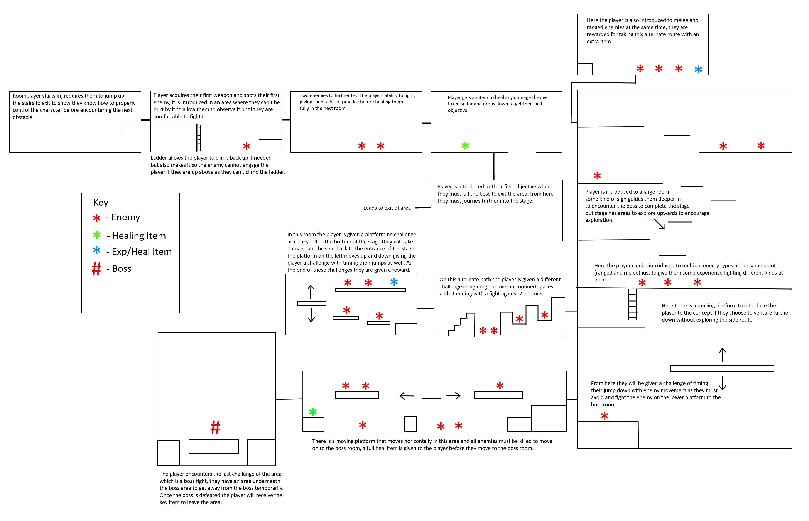
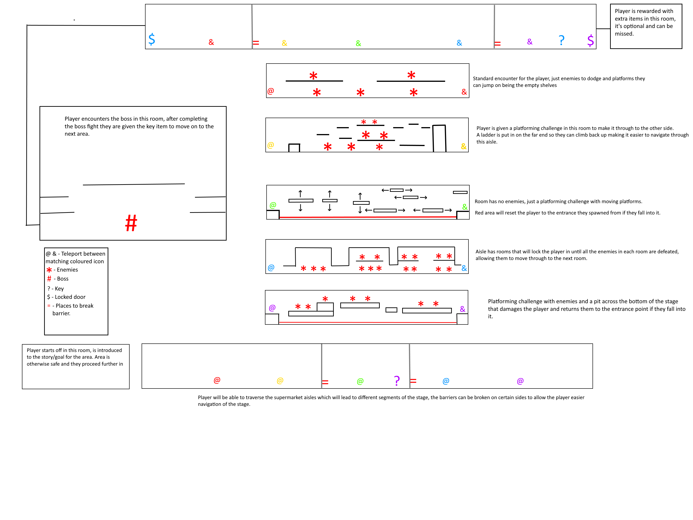
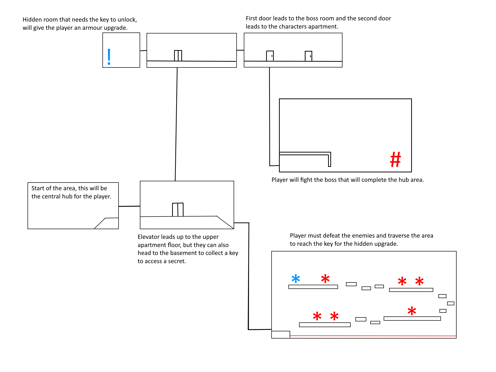

Below is the level designs proposed for the first 3 stages, with the 3rd stage being the hub world. The levels are designed to challenge the player and give them different obstacles to overcome during the game.
The player starts here and is given the goal to investigate what is happening and escape, this level functions as a tutorial level.
The player is here to investigate an outbreak of Covid-19, here they will journey in deeper to investigate it and try to stop any further infections. This level is a standard level.
This area acts as the hub world but the player must first defeat a boss to make the area safe, this will be the only encounter in the area when they first visit.
